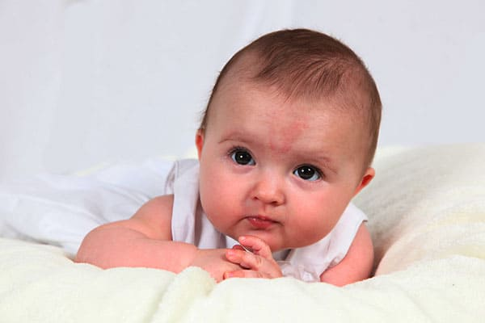
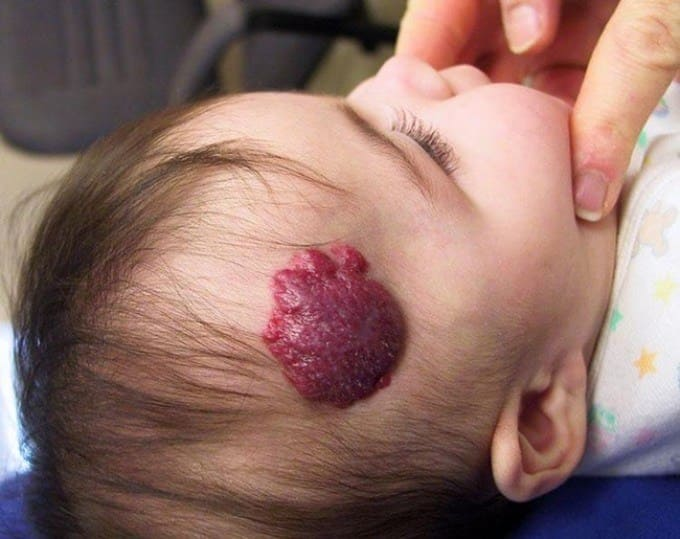
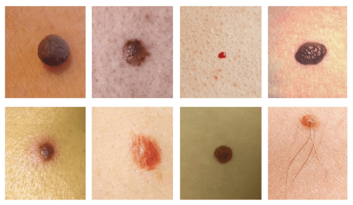
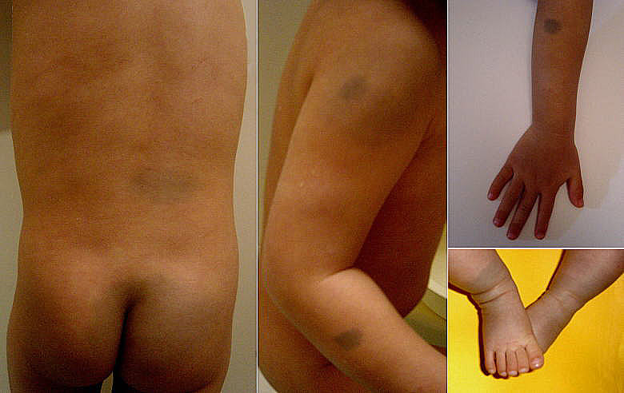
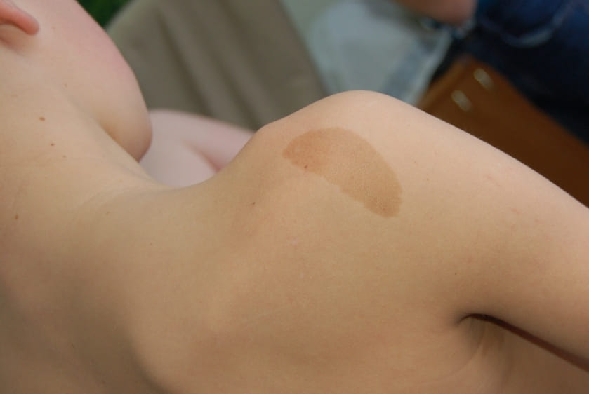

Проведите рукой по коже своего ребенка. Такая мягкая, такая ровная, но не идеальная. Вы чувствуете сухие участки, шелушащиеся пятна, шершавые и сморщенные места, а на некоторых участках кожа как будто не подходит по размеру, например, она не прилегает вокруг подбородка, на шее, запястьях и пятках. Но не волнуйтесь, ваш ребенок дорастет до нее. Давайте пройдемся руками и глазами, от головы до пят, по всем разновидностям кожных изменений, наблюдающихся у большинства новорожденных.
Когда вы смотрите на кожу своего ребенка, она также не кажется идеальной. На ней точки и крапинки, высыпания и кровоподтеки, полосы и пятна – такое разноцветное пальтишко. Но кожа новорожденного имеет уникальное свойство – способность меняться – иногда прямо у вас на глазах.
Сосудистый невус («укусы аиста»). У большинства новорожденных имеются участки, где множество кровеносных сосудов скапливается пучками и просвечивает через тонкую кожу. Эти ровные на ощупь красновато-розовые метки наиболее заметны на веках, на затылке и посередине лба. Эти пятнышки не являются, говоря медицинским языком, высыпаниями. Они называются сосудистым невусом или, на языке родителей, родовыми пятнами. Бабушки окрестили их «укусами аиста». Но никакой мифический аист не клюнул вашего ребенка. Эта кожная достопримечательность объясняется пучками разросшихся кровеносных сосудов, которые видны через тонкую кожу новорожденного. По мере того как лишние кровеносные сосуды ссыхаются, а кожа вашего ребенка становится толще, они практически всегда исчезают или значительно бледнеют к первому дню рождения. Иногда невус, особенно на затылке, остается, но его закрывают волосы. Иногда эти особые приметы блекнут, но снова появляются, когда ребенок напрягается или плачет, и тогда родители восклицают: «Смотри, фары на лбу зажглись!».

Клубничный невус (пещеристая гемангиома, кавернома). В то время как сосудистый невус появляется при рождении и со временем тускнеет, другие родовые пятна появляются одну или две недели спустя и со временем растут. Большинство появляется в виде выпуклого красного круга и постепенно увеличивается до размера монеты в течение первого года. Где-то между годом и тремя они начинают сморщиваться. Вы определите, что пятно достигло своего максимального размера и больше расти не будет, когда увидите, что центр стал серым.

Название «клубничный» невус получил потому, что эти пятна напоминают клубнику, они образованы кровеносными сосудами, которые отошли от своего нормального местоположения и продолжали расти. У большинства детей есть хотя бы один такой невус. И, как ягоды на веточках клубничного куста, они бывают разного размера и формы, от размера веснушки до столь крупного размера, как у мяча для гольфа.
Невзирая на косметическую непривлекательность, в большинстве случаев клубничные невусы лучше оставить в покое и подождать, пока они исчезнут сами. Иногда они причиняют большое неудобство своим неудачным расположением. К примеру, такой вырост на веке может препятствовать подъему века и мешать развитию зрения у ребенка. Другие располагаются на руках и ногах, где они кровоточат, если ребенок ушибется. Лишь в редких случаях они остаются надолго и становятся косметическим дефектом. В этих случаях уродливый или причиняющий много неудобств невус может быть удален с применением инъекций и лазерной терапии.
Родинки. Называемые пигментным невусом, эти коричневато-черные бугорки варьируются от размера веснушки до огромных, волосатых пятен. Родинки обычно остаются того же размера, поэтому кажутся сравнительно более маленькими, когда ребенок подрастает. Это доброкачественные образования, и не стоит ни беспокоиться, ни лечить их. В очень редких случаях крупные пигментные волосатые невусы подлежат хирургическому удалению из-за угрозы их злокачественного перерождения.

Монгольские пятна (синий невус, невус Ядассона-Тише). Не проходит и года, чтобы мне не досадил звонок от кого-нибудь, обвиняющего родителя в жестоком обращении с ребенком, о чем якобы свидетельствуют иссиня-черные отметины на ягодицах ребенка. Эти напоминающие кровоподтеки пятна, часто встречающиеся у детей негров, азиатов и индусов (первоначально были обнаружены у выходцев из существовавшей когда-то Монгольской империи, отсюда название), отчетливо выделяются в нижней части спины и на ягодицах, а иногда также на плечах и ногах. Эти «следы побоев» со временем тускнеют, но в большинстве случаев никогда полностью не исчезают.

Плоские родимые пятна цвета кофе с молоком. Это светло-коричневые пятна вровень с кожей, похожие на маленькие лужицы разлитого кофе со сливками. Большинство остается того же размера, становясь сравнительно меньше по мере того, как ребенок растет.

Марта, Уильям, Роберт, Джеймс Сирс"Ваш малыш от рождения до двух лет"